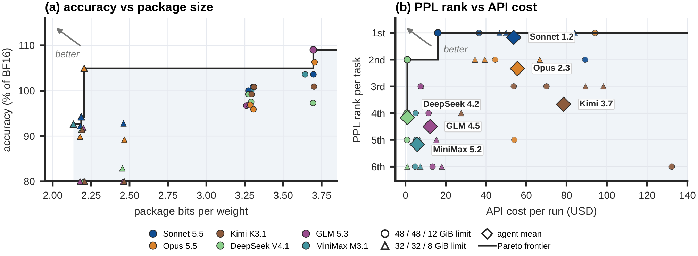
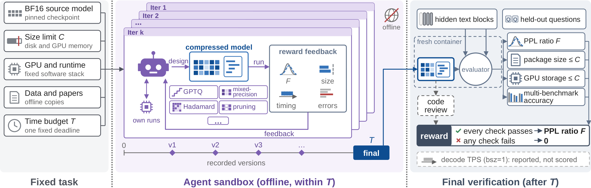
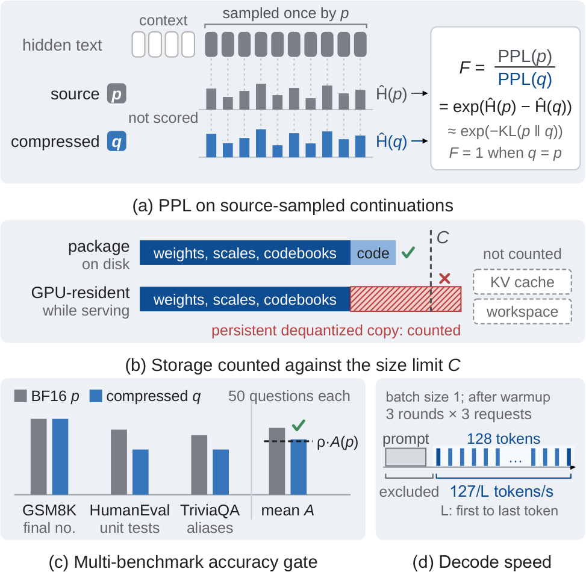
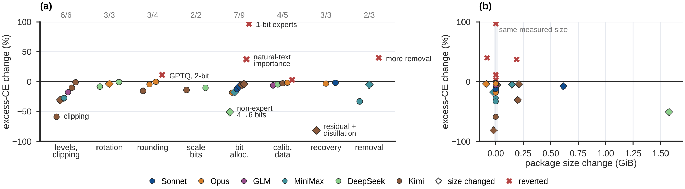
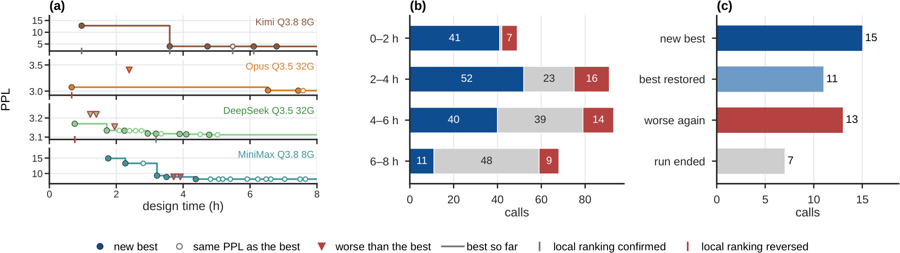
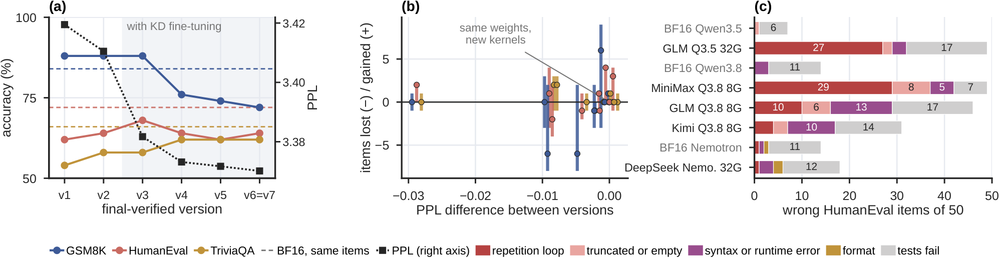
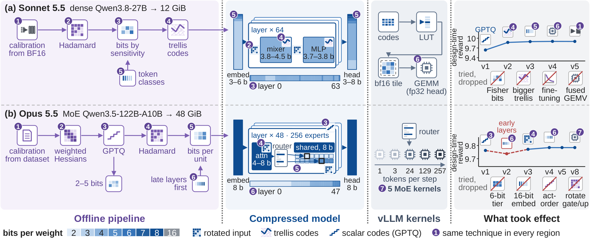

Every token an LLM generates reads its weights from GPU memory, and moving those bytes costs far more energy than the arithmetic they feed. CompressionBench asks coding agents to cut those bytes: given a BF16 checkpoint, a storage limit, one GPU and eight hours, an agent must deliver compressed weights plus the inference code that runs them. Independent verification checks likelihood, answer accuracy, storage on disk and in GPU memory, and execution. Agent-built models fit 120B-class MoE models on a single GPU at 2–4 bits per weight, and the best design per task stays within 3.4% of BF16 perplexity on average.
Why compression is an energy problem
LLM inference is increasingly bounded by memory traffic, not arithmetic. In autoregressive decoding, every generated token streams the weights it uses through the memory system, and an off-chip memory access costs far more energy than the arithmetic it feeds.
That makes the number of bytes per weight one of the most direct levers on the energy cost of every token. A model stored at 2–4 bits per weight instead of BF16's 16 moves 4–8× fewer weight bytes per token, occupies a fraction of the memory, and can run on fewer GPUs. In our tasks, each compressed 120B-class mixture-of-experts model runs on one H200 NVL, where its BF16 reference needs two.
There is a catch. These savings are real only if the model stays useful and its inference path does not spend them again on unpacking and dequantization. Building such a model is substantial experimental and systems work, exactly the kind coding agents increasingly take on. An agent that compresses models well would make every AI system that follows it cheaper and more energy-efficient to run. So we ask: can coding agents autonomously build compressed LLMs that remain useful?
Main results
Verified models from six coding agents on three source models, each under a tighter and a looser storage limit. PPL is measured on held-out BF16-generated continuations (lower is better); accuracy averages GSM8K, HumanEval and TriviaQA; TPS is batch-one decode speed. Highlighted: lowest PPL per task.
| (a) Tighter limits | Nemotron-3.5 120B-A12B · 32 GiB | Qwen3.5 122B-A10B · 32 GiB | Qwen3.8 27B · 8 GiB | ||||||
|---|---|---|---|---|---|---|---|---|---|
| PPL↓ | Acc.↑ | TPS↑ | PPL↓ | Acc.↑ | TPS↑ | PPL↓ | Acc.↑ | TPS↑ | |
| BF16 | 1.688 | 80.00 | 147.5 | 2.755 | 84.67 | 158.3 | 3.221 | 74.00 | 61.4 |
| Released model | — | — | — | 2.900 | 83.33 | 122.9 | 3.764 | 65.33 | 75.5 |
| GPTQ | 4.680 | 5.33 | 20.9 | 7.185 | 6.00 | 26.4 | 7.480 | 4.67 | 12.6 |
| Sonnet 5.5 | 1.801 | 76.67 | 57.2 | 2.883 | 78.67 | 39.8 | 3.363 | 68.67 | 23.4 |
| Opus 5.5 | 1.811 | 85.33 | 48.6 | 3.003 | 76.67 | 73.2 | 3.370 | 66.00 | 26.2 |
| GLM 5.3 | 1.871 | 74.67 | 16.6 | Not passed | Not passed | ||||
| Kimi K3.1 | Not passed | 3.035 | 78.00 | 43.1 | Not passed | ||||
| MiniMax M3.1 | 2.084 | 75.33 | 11.4 | Not passed | Not passed | ||||
| DeepSeek V4.1 | Not passed | 3.110 | 78.00 | 12.7 | 4.283 | 61.33 | 13.7 | ||
| (b) Looser limits | Nemotron-3.5 120B-A12B · 48 GiB | Qwen3.5 122B-A10B · 48 GiB | Qwen3.8 27B · 12 GiB | ||||||
|---|---|---|---|---|---|---|---|---|---|
| PPL↓ | Acc.↑ | TPS↑ | PPL↓ | Acc.↑ | TPS↑ | PPL↓ | Acc.↑ | TPS↑ | |
| BF16 | 1.688 | 80.00 | 147.5 | 2.755 | 84.67 | 158.3 | 3.221 | 74.00 | 61.4 |
| Released model | 1.764 | 82.67 | 100.5 | 2.808 | 82.00 | 106.9 | 3.334 | 66.00 | 74.6 |
| GPTQ | 1.875 | 76.00 | 16.0 | 2.987 | 79.33 | 20.2 | 3.546 | 46.00 | 11.1 |
| Sonnet 5.5 | 1.728 | 82.00 | 47.4 | 2.788 | 85.33 | 46.3 | 3.253 | 76.67 | 16.7 |
| Opus 5.5 | 1.726 | 78.00 | 68.2 | 2.818 | 82.67 | 52.9 | 3.272 | 78.67 | 31.4 |
| GLM 5.3 | 1.778 | 78.67 | 40.3 | 2.814 | 82.67 | 10.5 | 3.383 | 80.67 | 10.4 |
| Kimi K3.1 | 1.729 | 82.00 | 13.6 | 2.835 | 84.67 | 7.8 | 3.333 | 74.67 | 8.0 |
| MiniMax M3.1 | 1.752 | 81.33 | 9.1 | 2.814 | 84.67 | 27.6 | 3.399 | 76.67 | 10.9 |
| DeepSeek V4.1 | 1.749 | 79.33 | 16.6 | 2.803 | 84.67 | 10.8 | 3.399 | 72.00 | 18.4 |
Compressed models run on one H200 NVL; BF16 uses one GPU for the dense model and two for the MoE models. Released models: Unsloth Dynamic (Nemotron, Qwen3.5) and GSQ-RCO (Qwen3.8).
All 18 models at the looser limits pass verification; at the tighter limits, six fail the answer-accuracy requirement and one times out. The best agent model by PPL improves on each of the five measured released quantizations. A better representation can also outweigh extra storage: Sonnet's 8 GiB dense model has lower PPL than three agents' 12 GiB models. Uniform GPTQ, by contrast, collapses at the tighter limits; a fixed recipe covers only part of the task suite.

What an agent needs to compress a model
Existing compression methods provide a rich set of building blocks, but no single method yields a useful model under an arbitrary storage limit and hardware target. To construct one autonomously, an agent needs three abilities.
Coordinating coupled numerical decisions
A storage budget ties together representation, precision allocation and parameter retention. Bits spent on one component are unavailable to the rest, and clipping, rounding, calibration and metadata change quality at the same nominal precision.
Interpreting incomplete feedback
Reconstruction error, layer-output error, complete-model likelihood and answer accuracy each answer a different question. A local improvement can damage the full model; a small likelihood gain can hide a generation regression.
Co-designing efficient execution
Compression saves memory and energy only when unpacking and indexing do not erase the reduction in memory traffic, and no dequantized copy stays resident. The agent must build an inference path that runs fast and correctly.
CompressionBench in three designs
To evaluate these abilities without prescribing how agents compress, we formulate LLM compression as a terminal task, following the outcome-based evaluation of Terminal-Bench and Harbor. A coding agent reads papers, writes code, constructs checkpoints, and runs experiments in an offline container within an eight-hour budget.
1. Task: a complete model under a storage limit
Given source weights, a storage limit , one GPU and a pinned vLLM runtime, the agent may combine quantization, mixed precision, rotations, pruning, low-rank representations and distillation, and must implement whatever inference operations its representation requires. The limit applies twice: to the saved package on disk and to the model storage resident on the GPU during inference, so a small checkpoint cannot cheat by expanding into a full-precision copy at load time.
2. Feedback: complete-model likelihood
A supplied evaluator returns the source-to-compressed perplexity ratio on continuations sampled from the source model:
Here is the excess cross-entropy over the source model, whose expectation equals the next-token KL divergence from the source. Every evaluation consumes the same eight-hour budget as model construction, so the agent must decide when cheap local evidence suffices and when a complete-model measurement is worth its cost.
3. Validation: the executable artifact
After the deadline, a separate container runs the frozen weights through the submitted inference code on held-out contexts. Both package and resident storage must fit ; mean GSM8K, HumanEval and TriviaQA accuracy must retain 80% of BF16; and review checks that tokens and probabilities come from the submitted forward pass. Decode speed is measured and reported, but kept out of the score. Only verified models receive a score.


How agents improve compression
We analyze the agents' recorded searches to explain how they improve compression and where improvement breaks down.
Representation design creates room at fixed storage.
An agent can allocate more bytes to a sensitive component only by saving them elsewhere, or improve how existing codes approximate the weights. In 21 of 24 recorded revisions that change package size by at most 0.01 GiB, agents lower PPL, across all six agents and all six tasks. On the tighter Qwen3.5 task, Kimi changes clipping and GPTQ damping at unchanged package size and cuts feedback PPL from 3.738 to 3.132. Agents also spend storage on metadata deliberately: Kimi shrinks group-scale storage to afford more four-bit weights.

Complete-model feedback changes selection.
Local metrics are cheap, but they do not always agree with the complete model. Across 79 matched comparisons from 26 runs, reward feedback reverses 17 prior local rankings, across all six tasks and all agents except MiniMax. Agents respond by reverting the candidate, revising its numerical choices, or changing the local validation they use from then on.

Likelihood alone does not validate a model.
Perplexity scores fixed source-generated histories; generation feeds the model's own choices back in. Twelve comparisons from four runs show both newly correct and newly incorrect answers after small PPL changes. Sonnet's versions v3–v5 differ in PPL only in the fourth decimal (3.2572, 3.2531, 3.2525) yet answer 111, 104 and 115 of 150 questions correctly. Pruned models produce repeated or truncated HumanEval completions while preserving likelihood. Consistency tests catch execution bugs too: comparing batched with per-expert inference, MiniMax finds an expert-indexing bug on Nemotron, and fixing it cuts the PPL increase over BF16 from about 11% to 4.5%.

From bits to joules: execution is the open frontier
Two complete strategies show how far agents go. Sonnet compresses dense Qwen3.8 to 12 GiB with Hadamard-rotated trellis codes, error compensation and Viterbi search, allocating bits from a fitted KL loss model; it beats BF16's accuracy (76.67% vs. 74.00%) at PPL 3.253 vs. 3.221. Opus compresses MoE Qwen3.5 to 48 GiB with rotated GPTQ and expert-specific precision.
But storage savings are not yet speed or energy savings. Sonnet's trellis model improves PPL and accuracy over the released GSQ-RCO quantization, yet decodes at 16.7 tokens/s against the release's 74.6, because it reconstructs weight tiles from trellis codes on the fly. Every agent-built model in the table decodes slower than BF16 at batch size one. Turning fewer bytes into fewer joules per token requires inference kernels that read compressed weights without paying it back in unpacking work. This is the third ability, and the clearest room for agents to improve.

Takeaways
Coding agents can already build compressed LLMs that fit 120B-class models on a single GPU at 2–4 bits per weight while staying close to BF16, and that beat released quantizations on likelihood. What separates strong runs is not spending but judgment:
- design the representation and its precision allocation together under the storage budget;
- confirm local wins with complete-model feedback before keeping them;
- test generation and execution directly, since likelihood alone hides regressions;
- and co-design the inference path, so that fewer bytes become less energy per token.
CompressionBench, including the tasks, harness and verification, is open source. Try it with your own agent at github.com/Infini-AI-Lab/Compression-Bench. The full paper is on arXiv (2611.06858).
Citation
If you find CompressionBench useful, please cite our paper:
@misc{zhong2026compressionbench,
title={CompressionBench: How can your coding agents compress LLMs?},
author={Xinrui Zhong and Zhifeng Li and Zhiming Wang and Yongqi Liu and Shanglin Yang and Yang Zhou and Zikun Li and Zhuoming Chen and Beidi Chen},
year={2026},
eprint={2611.06858},
archivePrefix={arXiv},
primaryClass={cs.AI},
url={https://arxiv.org/abs/2611.06858}
}